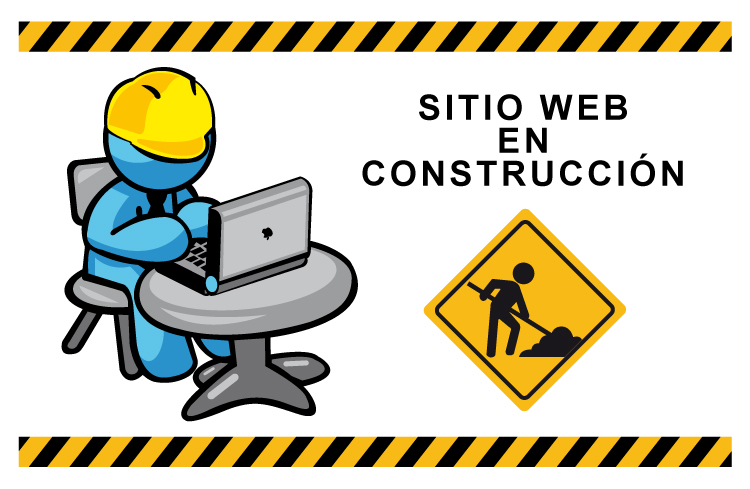

Unidad de Procesos de Fabricación y Energías Renovables

Repositorio técnico especializado para la consulta, gestión y optimización de recursos energéticos y procesos avanzados de fabricación.

Repositorio técnico especializado para la consulta, gestión y optimización de recursos energéticos y procesos avanzados de fabricación.